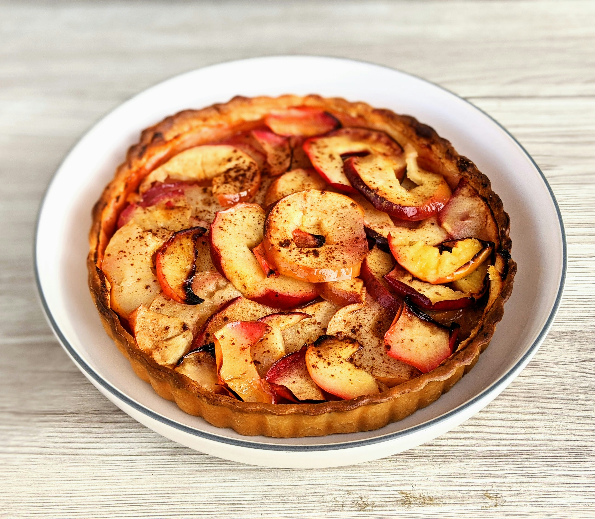
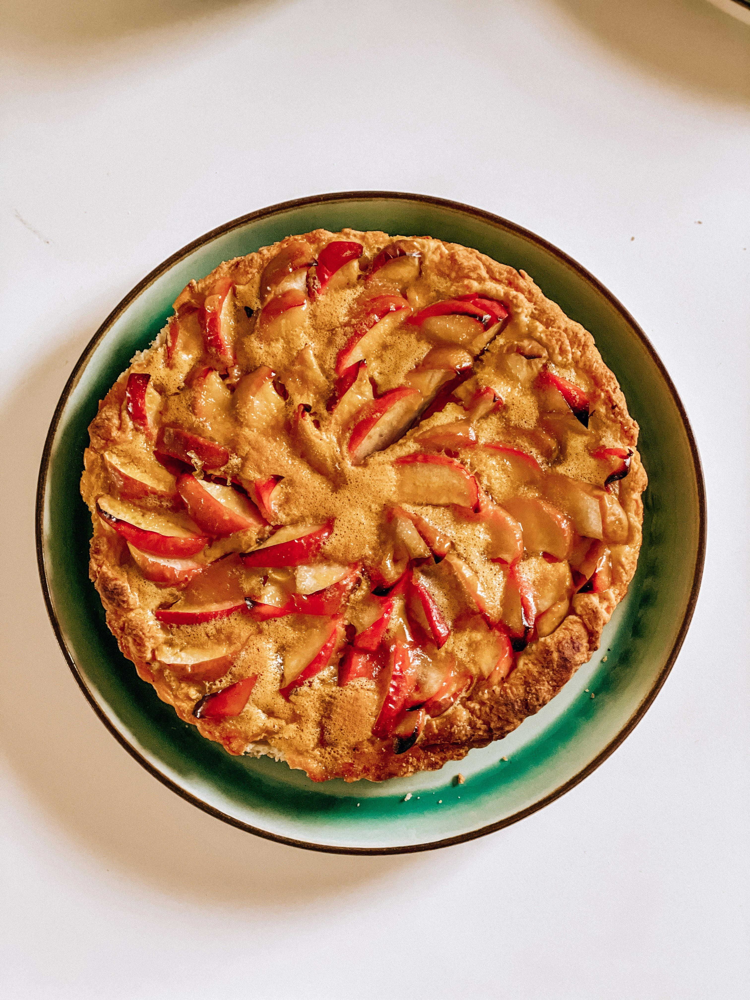

Apple Pie

Dish Description
An apple pie is a fruit pie with apples used as the main element. Apple pie is frequently served with cheddar cheese, whipped cream, ice cream, or custard. Usually, there are two crusts: one above and one below the filling. The top crust might be latticed or solid. To keep the bottom crust from turning mushy, you can bake it separately. Apple pie with a deep dish often has a top crust only. The crust is served on the bottom of tarte Tatin, but it is cooked on top.
Main Ingedients
- Half a cup of butter
- One cup of brown sugar
- Five Granny Smith apples, quartered, peeled, and thinly sliced.
- Three nine-inch prerolled, chilled pie crusts
- One cup of separated white sugar
- Two tsp ground cinnamon, split
- Half a cup of white sugar
- One tablespoon of butter, sliced into little pieces

Steps
- Bake at 425 degrees Fahrenheit (220 degrees Celsius).
- Prepare the apple pie: Apple slices should be put in a big basin. In a separate bowl, add white sugar, flour, nutmeg, cinnamon, and allspice; sprinkle over apples and toss to coat evenly.
- Take the pie shell out of the freezer, add the apple filling, and then drizzle some butter over top. Gently place a piece of aluminum foil over the filling; do not seal
.
- For ten minutes, bake the pie in a preheated oven.
- Prepare the streusel topping in the interim: In a larger bowl, stir together flour, oats, brown sugar, lemon zest, and cinnamon. Add butter and cut until crumbly. Take the pie out of the oven and top with streusel.